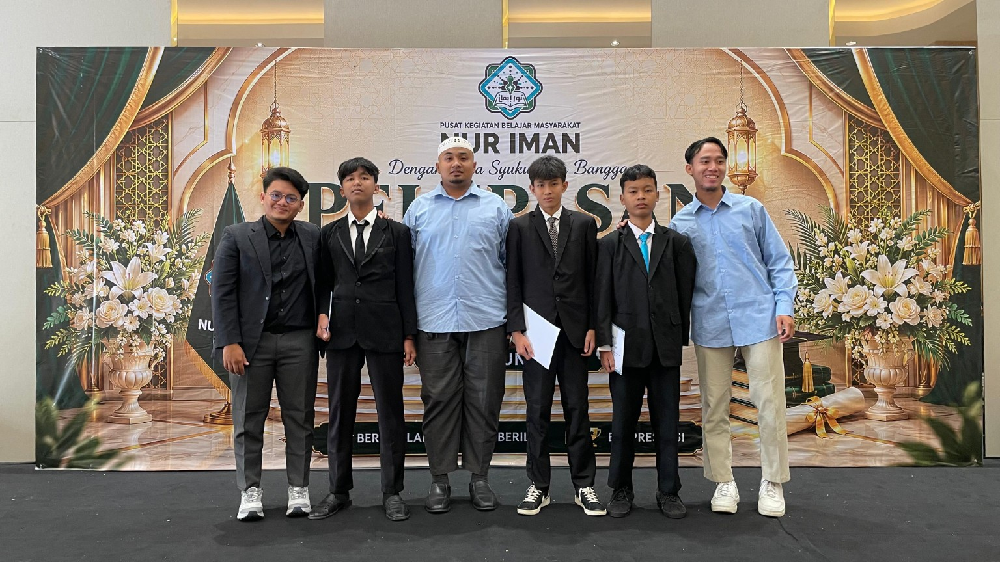
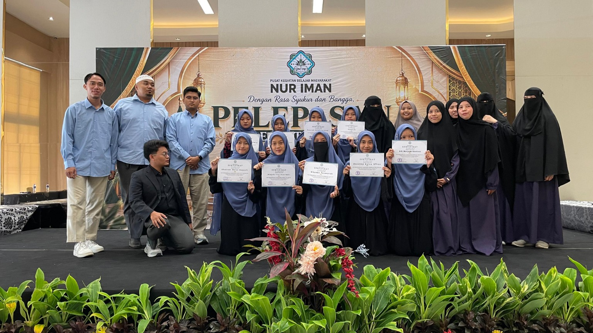
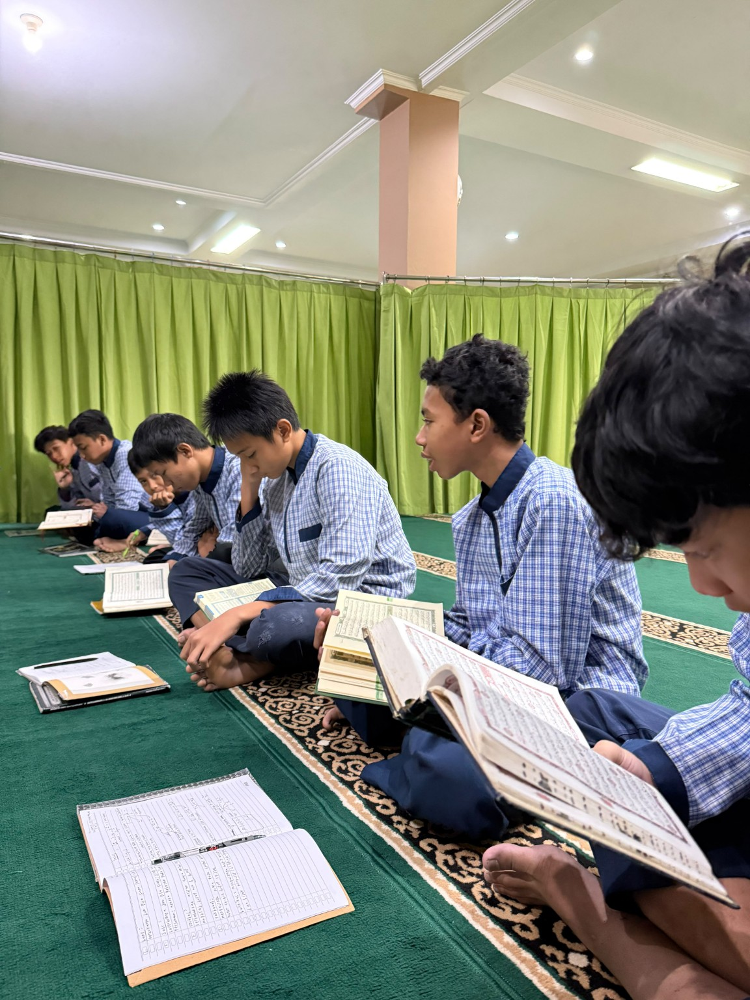

Pembelajaran Al-Qur’an
Pembiasaan membaca dan mempelajari Al-Qur’an.
Menguatkan karakter, menyiapkan masa depan, dan menumbuhkan kemandirian.
Penguatan akademik, pemahaman nilai Islam, pembentukan karakter, dan kemandirian peserta didik.
Pembiasaan membaca dan mempelajari Al-Qur’an.
Mendorong kemampuan berpikir dan belajar mandiri.
Seluruh foto SMP dibatasi pada halaman profil khusus ini.


